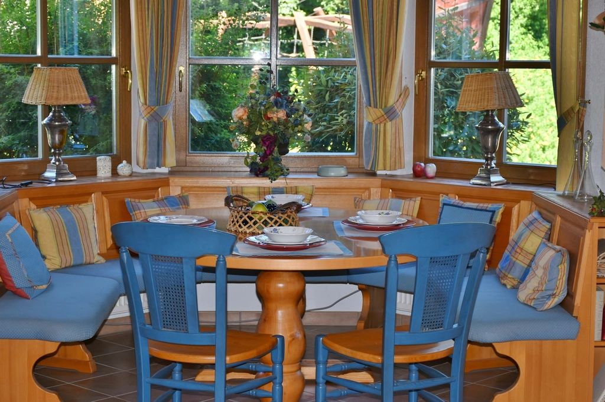
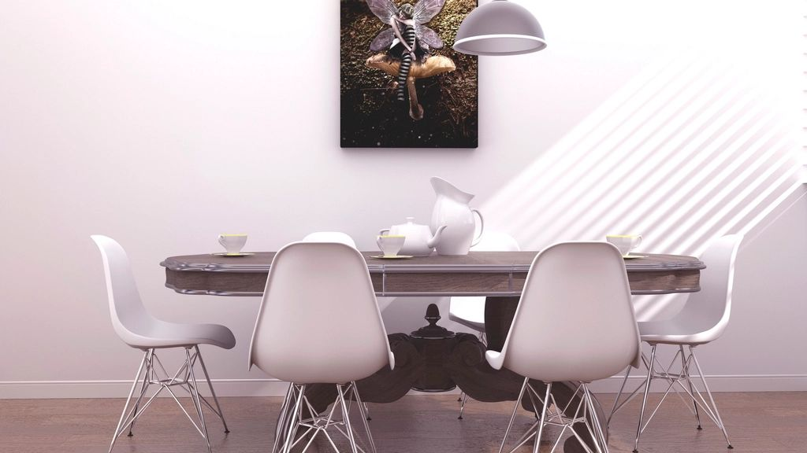
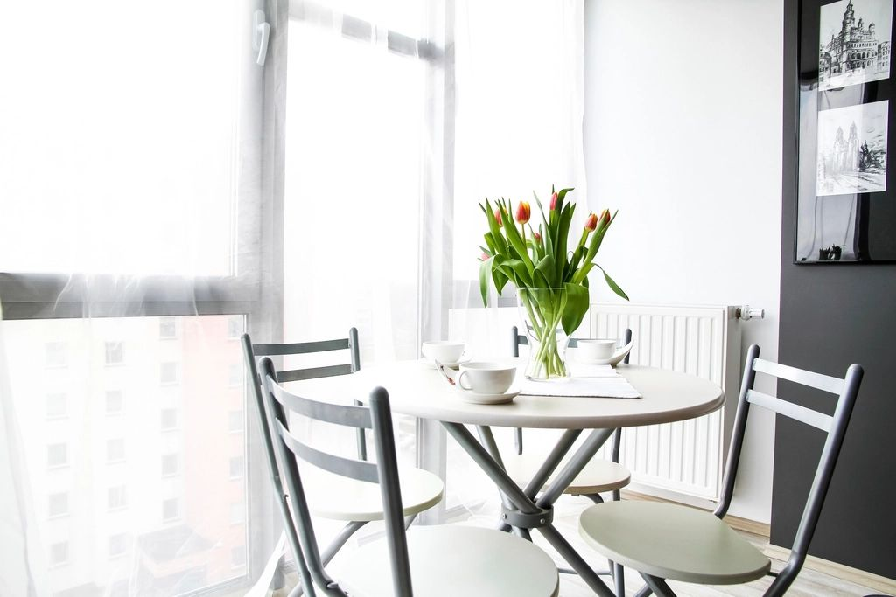
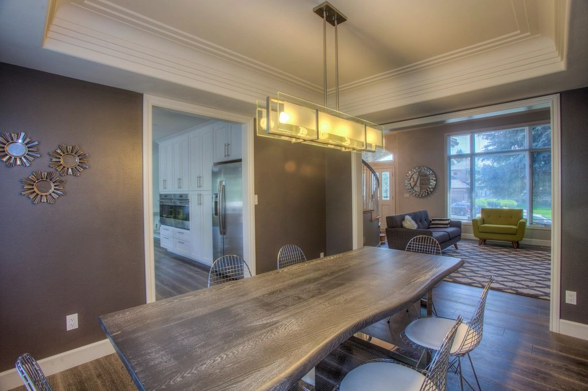

In Indian homes, the dining area is where the family meets every day and where festival meals are served. A modern dining room should be easy to use daily and ready to stretch for guests.
1. Size the table for real life
Plan for your everyday family size, then add flexibility with an extendable table or a bench that seats more people during festivals.
2. Hang a statement pendant
A pendant or chandelier centred over the table defines the dining zone and adds instant style. Keep it low enough to light the table, but high enough not to block views.

3. Add a crockery unit
A crockery unit with glass shutters displays your best dinnerware and keeps serving pieces close at hand. Add a counter on top for serving during gatherings.
4. Try banquette seating
Built-in bench seating along a wall saves space, seats more people and can hide storage underneath.

5. Mix materials
Pair a wooden or stone-top table with upholstered, cane or metal chairs for a modern, collected look. Stone tops are easy to clean after spicy meals.
6. Define the zone in open layouts
Use a rug, a ceiling detail or a change in lighting to mark the dining area in an open living-dining room.
7. Add a feature wall or art
Wallpaper, wall panelling, a mirror or a large artwork behind the dining table turns it into a focal point.

8. Plan for easy serving
Keep the dining area close to the kitchen with a clear path, and consider a kitchen pass-through or a breakfast counter in apartments.
9. Choose easy-care finishes
Wipeable upholstery, sealed wood and stain-resistant surfaces keep the dining area looking good with daily use.

10. Follow Vastu
The west is traditionally considered good for the dining area, and a square or rectangular table is generally preferred.
Manzil Homes designs dining areas as part of complete home interiors across Visakhapatnam, Hyderabad, Andhra Pradesh and Telangana.